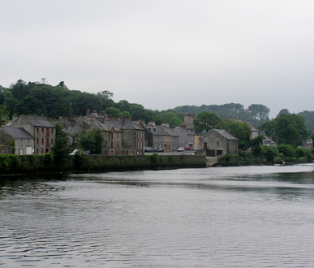

Leckeys in donegal ireland

![Mabel Lecky had been told the Leckey family had originally come from Stirlingshire, Scotland ‘200 or 300 years ago’ to work in the linen industry. She said they were ‘scutchers’. ‘Tradition connects the Irish Leckeys with the Laird of Leckie of Leckie Castle, Stirlingshire. (Leckey, John. 1986)
The Leckeys first came out as part of the Ulster plantation and settled in the Laggan. Today’s Leckeys may have descended from the Men at Arms of Lady Cunningham or The Duke of Lennox or they may have come with William Stewart who was given 1000 acres of land in Ramelton after he suppressed an uprising by the Gaelic clans in Donegal. Part of the undertaking of these grants was that Scottish or English settlers would be brought out to populate the North of Ireland and keep the Irish people out. On every 1000 acres received, there had to be 24 able bodied Scots or Englishmen over families (to minimize old clan allegiances). Two of the families were to be freeholders; three were to be leaseholders, and the remainder could be cottagers. Undertakers had to be prepared to muster their tenants twice a year and to provide them with weapons. Scottish settlers numbered 20:1. They were to be called on to fight any insurrections of the Irish. Maybe the Leckeys came after the Leckies of Stirlingshire lost their barony in 1668 and were hounded out of Scotland for their religious views.
](Leckeys_of_Donegal_files/shapeimage_1.png)


leckey records of the 17th & 18th c in donegal
-
1.1630 Muster Roll for the Barony of Raphoe.
Men at Arms
-
• ROBERT LEACKYE (no armes)
-
• ANDREW LACKYE (swords only) on the Duke of Lennox’s Estate of 4000 acres
-
• RICHARD LEAKY (swords and halbert) for the Lady Conningham widow of Sir James Conningham undertaker of 2000 acres.
-
2.1665 hearth money rolls for donegal
-
• William Lecky of Rathmullen in Killygarvan parish
-
• Robert Lecky of Clonleigh quarterland in Clonleigh parish
-
• James Lecky of Leck parish
-
• Thomas Lecky of Corky in Raymoghy parish
-
• John Lecky of Ballienianbeg in Raymoghy parish
-
3.index of protestant householders in the year 1776 parish of leck, barony of raphoe, Co. Donegal, ireland
-
• Lecky, Robert ; Oughliard
-
4. index to wills diocese of raphoe
-
• Leckey, James; Ruskey; 1780
-
• Leckey, William; Killygarvan 1776
-
5.Flax Growers of Ireland 1796 - County Donegal
-
• Leckey Andrew Taughboyne
-
• Leckey Hugh Donaghmore
-
• Leckey John Clonleigh
-
• Leckey John Killygarvan
-
• Leckey John Rye
-
• Leckey Oliver Donaghmore
-
• Leckey Robert Donaghmore
-
• Leckey Robert Rye
-
• Leckey Thomas Rye
-
• Leckey William Donaghmore
-
• Leckey Wm. Taughboyne
-
• Lecky Robert Donaghmore
leckey
A branch of the Scottish Clan MacGregor. Settled in Donegal and Derry in the mid 17th Century. It derives from a place in Stirlingshire. Gaelic “with flagstones”.
MacLysaght, John. The surnames of Ireland.
Ramelton, Donegal 2005
Aughnish from Aughnish Island 2005